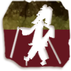

制皮
制皮是制皮影的开始。选皮最好要在春天进行。先将带血的毛皮在清水中浸几天，再将毛皮绑在一木框上，用绳从四周拉平，用特制的刀刮去上面的毛和其他杂物。为了让皮看上去光滑透明，往往需要刮上好几遍。皮准备好后要根据影人头部、颈部、腰部、臂部、脚部软硬厚薄的不同需要来选好背部、腰部或两者结合部的皮料，以备雕刻。
画稿
最初的设计稿是画在纸上的，制作皮影时所用的画稿称为“样谱”，也是历代艺人们相传的手绘设计图稿。和皮影的唱本一样，纸质样谱不易保存，故现今能流传下来的明清样谱寥寥无几。
图稿誊到皮上叫过稿，也叫落样。把要雕刻的各种图谱纹样，包括脸谱、服饰、道具等图案，放在加工好的透明皮子下面，然后用小钢针把图样照描在皮子上。将刮好的牛皮分解成块，用湿布潮软后，再用特制的推板，稍加油汁逐次推摩，使牛皮更加平展光滑，并能解除皮质的收缩性，然后才能描图样。
雕刻
艺人的雕刻工具一般有刻刀、蜡板、画针、剪刀等。刻刀的规格和大小只要用得合手就行。蜡板是垫在皮下的。把图覆在皮上，用针刺出白痕。再剪出成形，用刻刀进行细加工。
雕刻有阳刻与阴刻。阳刻就是一般所说的“空底”，画稿只留下线条，衬着影窗，可以产生强烈的对比效果，用来雕刻脸部；阴刻就是一般的“实底”，留下大片面积，在处理服装和图案时可以采用。雕刻还有很多的刀法。雕刻的刀锋起落点叫刀口。刀口有断口、尖头、齐口、圆口之分。齐口多用于方正规范的物象，如桌箱、柜橱、建筑等；尖口多用于炊烟、流云、水波、风带等；弧线纹刀口多用于花卉图案，也可以用在人物五官、头发上；锯齿形刀口与直线刀口结合用在衣领、帽口等地方。
敷彩
刻好之后要上色。根据兽皮的特点，收集相应的化学颜料，成分与剂量做到心中有底。炮制的方法是首先把制好的纯色化入稍大的容器内，再放进几块用精皮熬制的透明皮胶，然后把容器放在特制的灯架上，下边点燃酒精灯火，使之与胶色一起溶成粥状，趁热敷到影人上。
染色的方法大致有三种：套染、晕染、勾绘。套染是让在色调色度上产生变化，染时由浅及深，自然让度。晕染是增强立体感，使其自然丰满。勾绘是为了突出轮廓。上了色的皮经过再次处理，让色彩深入皮内，再刷上桐油，才算完成。
敷色后还要给皮影脱水发汗，目的是为了使敷彩经过适当高温吃入牛皮内，并使皮内保留的水分得以挥发。脱水发汗的方法很多，有的用薄木板夹住皮影部件，压在热炕的席下；也有的用平布包裹皮影部件，以烙铁或电熨斗烫；另一种很老的土办法就是用土坯或砖块搭成人字形，下面用麦秸烧热，压平皮影使脱水发汗。
 缀结
缀结为使皮影能自由活动，皮件全身须分头、胸、腰、手、腿及臀等部分，分别制作，再系以铁丝或麻丝。此外，尚须加上操纵杆，数目视角色而定，如女性角色为表示其婀娜多姿之形态，需使用多支操纵杆。